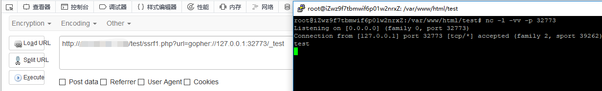

SSRF
小记录
SSRF，Server-Side Request Forgery，服务端请求伪造，是一种由攻击者构造形成由服务器端发起请求的一个漏洞。一般情况下，SSRF 攻击的目标是从外网无法访问的内部系统。
形成原因：大都是由于服务端提供了从其他服务器应用获取数据的功能且没有对目标地址做过滤与限制。比如从指定URL地址获取网页文本内容，加载指定地址的图片，下载等等。
常用协议
file
利用file协议查看文件
1 | file:///etc/passwd |
dict
利用dict探测端口
1 | dict://127.0.0.1:22 |
gopher
gopher协议，万能协议，支持发出GET、POST请求：可以先截获get请求包和post请求包，再构造成符合gopher协议的请求。可利用Gopher攻击Redis、Fastcgi 等
获取 redis 中所有的 key 可用使用 *
1 | keys * |
查看某个key是否存在
1 | exists key_name |
查看某个key的类型
1 | type key_name |
获取某一个key的值
1 | get key_name |
清空所有数据
1 | flushall |
利用
1 | gopher://127.0.0.1:32773/_test |

常见后端实现
file_get_contents
1 |
|
fsockopen()
1 |
|
curl_exec()
1 |
|


当限制了只能使用HTTP、HTTPS，此时用file、dict等协议就没有用了，此时可以利用302跳转进行利用
1 |
|
绕过
https://www.secpulse.com/archives/65832.html
对URL参数解析不当，导致可以绕过过滤
http://baidu.com@www.baidu.com/与http://www.baidu.com/请求时是相同的
使用。代替.
若服务端过滤方式使用正则表达式过滤属于内网的IP地址，可尝试将IP地址转换为进制
ip进制转换
十六进制ip（前面要加0x）
1 | 127.0.0.1 -> 0x7f.0x0.0x0.0x1 |
八进制ip（前面要加0）
1 | 127.0.0.1 -> 0177.0.0.01 |
特殊域名
1 | 127.0.0.1.xip.io |
短网址+302跳转
dns重绑定
在某些情况下，可出现下述情况：通过传入的URL提取host，随即进行DNS解析，获取ip地址，对此ip地址进行检验，判断是否合法，如果检测通过，则再使用curl请求。这里再使用curl请求就会做第二次请求，即对DNS服务器重新请求，如果在第一次请求时其解析返回正常地址，第二次请求时的DNS解析却返回了恶意地址，那么就完成了DNS重绑定攻击
防御
- 过滤返回信息
- 禁用不需要的协议，仅仅允许http和https请求
- 统一错误信息，避免用户可以根据错误信息来判断远端服务器的端口状态
- 限制请求的端口为http常用的端口，比如 80、443、8080、8090
- 设置URL白名单或者限制内网IP